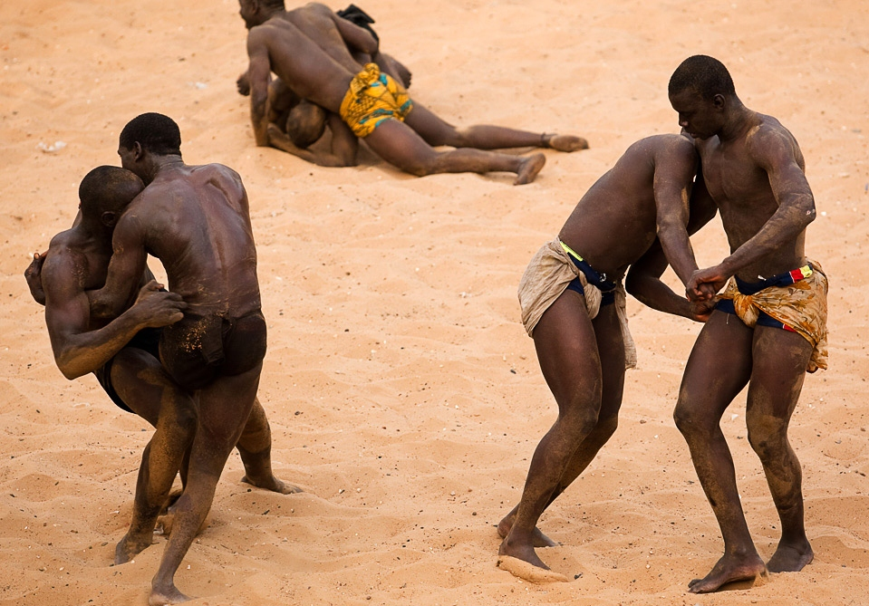
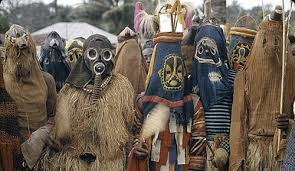

Attend the tradition
Attend the tradition
Igbo wrestling
Igbo wrestling is a traditional
sport that originated from
the Igbo people of Nigeria.

Attend the masquerade
Attend the masquerade
Festival
Watch various masquerades
are displayed

Attend the Abiriba
war dance
Watch an entertaining
acient dance